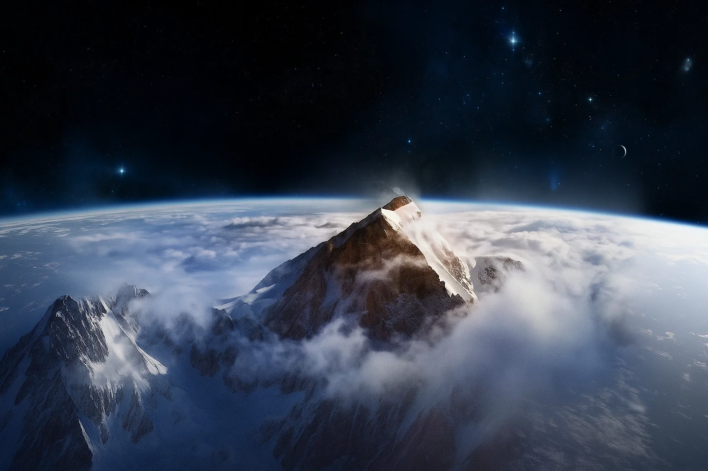
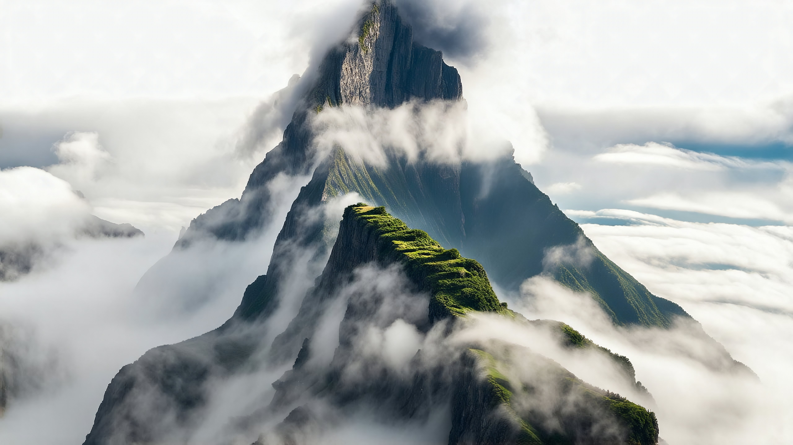

HEADSPACE
Descend Through Clouds
Ascend the Summit

Return Above
Enter the Forest
Deeper Into Mist
Cave Depths
Follow the Water
Continue Forward
Brave the Storm
Gaze Into Abyss
Find Solid Ground
Ascend to Light
Scale the Heights
Return to Origin
HEADSPACE blend:
overlay
screen
soft-light
hard-light
multiply
lighten
difference
normal
Apply